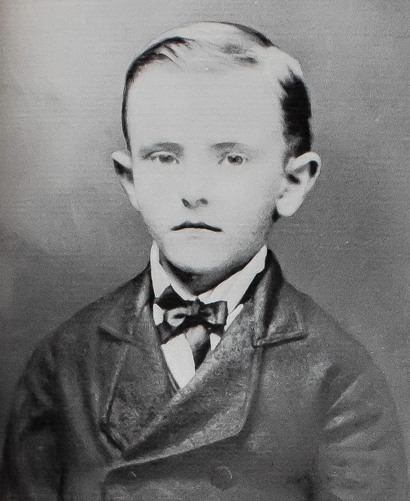
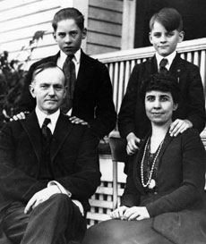
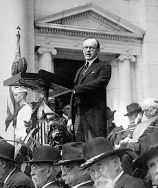

Don’t expect to build up the weak by pulling down the strong.
— Calvin Coolidge
- Childhood -
Calvin Coolidge was born in Plymouth, Vermont, on July 4th, 1872. He
was the only President to be born on Independence Day. He was born
to John Calvin Coolidge and Victoria Moor Coolidge. Coolidge's
father schooled him in Puritanism, encouraging honesty, thrift,
taciturnity, and piety. he graduanted from Amherst College, and
married Grace Anna Goodhue in 1905.

Calvin Coolidge as a Child
- Family -

Calvin Coolidge's Family
Calvin Coolidge was born to John Calvin Coolidge and Victoria Moor
Coolidge. His father's anscestors immigrated to the USA in 1630, and
his father was a prominent Vermont politician and businessman,
having served in the Vermont militia, been the constable and the
sheriff, and serving in many local offices. He also was a banker, a
broker, and a farmer. Coolidge's mother was neighbors with his
father, and married him in 1861. She died soon after from
consumption, at the age of 39.
- Early Career & Key Events -
After graduation, Calvin Coolidge went into law. He married Grace
Anna Goodhue, a teacher at the Clarke Institute for the Deaf, with
whom he later had two children. He was then elected mayor of
Northampton, Massachussetts. He was then the senator and lieutenant
governor of Massachussetts. He was elected governor of
Massachussetts in 1918. During his term he became famous for
quelling the violence during the Boston Police Strike, refusing to
rehire the striking officers.

Calvin Coolidge as Governor